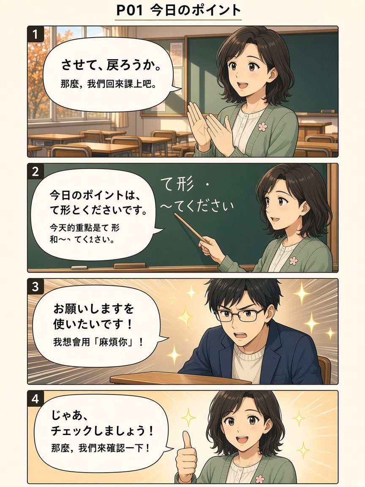
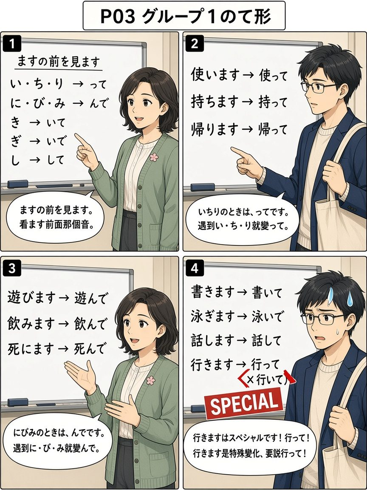
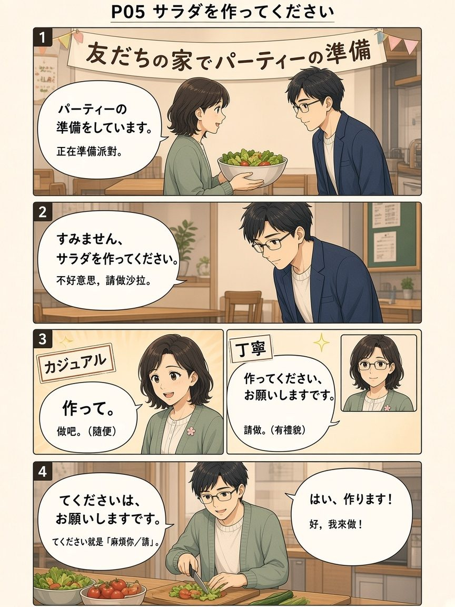
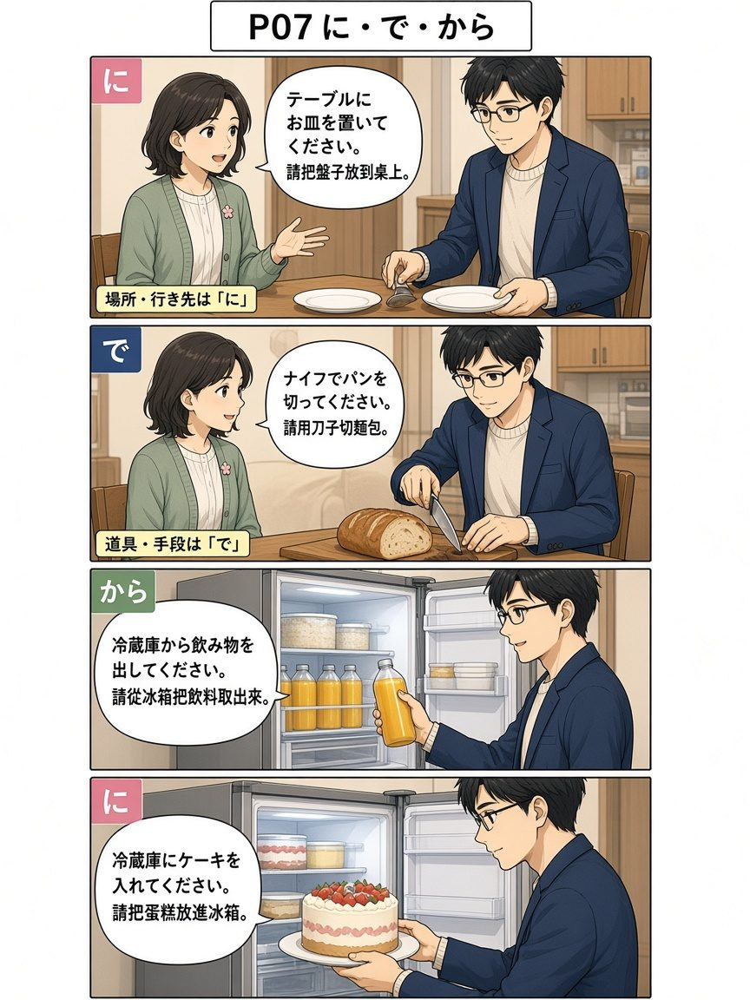
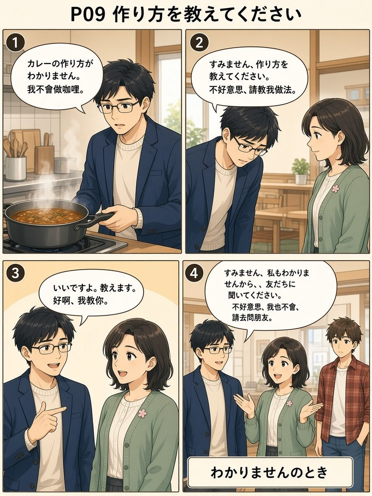
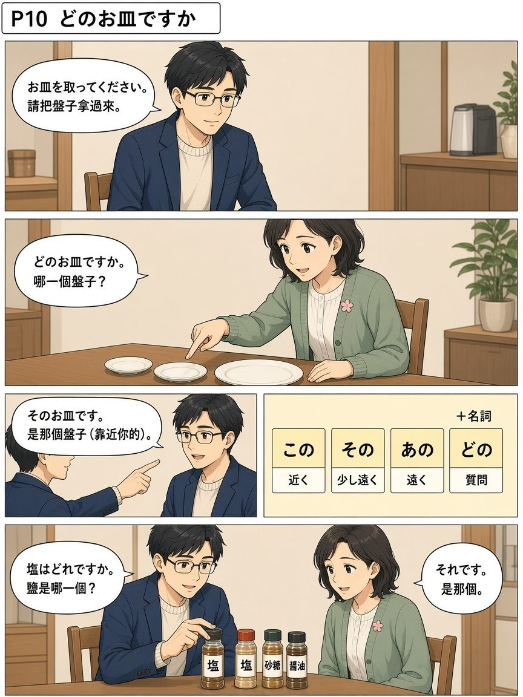

11/09 「て形・てください」動詞のグループと依頼
今天辛苦了！一句話重點：先判斷動詞是 1・2・3 組，再把ます形變成 て形，就可以說 〜てください（＝お願いします，禮貌拜託）。第 1 組看ます的前一個音：いちり→って、にびみ→んで、き→いて、ぎ→いで、し→して；行きます是特例，て形是 行って（不是 行いて）。第 2 組把ます改成て；第 3 組：します→して、来ます→来て。還有 〜方がわかりません。教えてください，以及 どのお皿ですか／塩はどれですか。
📖 漫畫版上線｜12 頁日漫把今天整課講完（動詞分組、て形、てください、に／で／から、〜方、どの）
主角ハルト（神樂坂語言學校新生・虛構）× ミキ先生。每頁圖下有 ▶ 播放／⧉ 複製／日語／羅馬拼音／中文。
打開完整漫畫版 →
從 P01 開始
漫畫複習：ハルト學會てください
📖 想看完整 12 頁日漫？請打開
漫畫版專頁。下面保留 6 格速覽。氣泡字若糊掉，請看圖下日語列。
主角是剛搬到東京・神樂坂附近、來語言學校讀書的約 37 歲男性（頁面上只叫「ハルト／主角」，不是任何人的肖像）。
① 今天的重點：て形とください

さて、戻ろうか。 | sate, modorou ka. | 那麼，我們回來課上吧。 | sp=ミキ
今日のポイントは、て形とくださいです。 | kyou no pointo wa, te-kei to kudasai desu. | 今天的重點是て形和〜てください。 | sp=ミキ;say=きょうのポイントは、てけいとくださいです。
お願いしますを使いたいです！ | onegaishimasu o tsukaitai desu! | 我想會用「麻煩你」！ | sp=ハルト;say=おねがいしますをつかいたいです
じゃあ、チェックしましょう！ | jaa, chekku shimashou! | 那麼，我們來確認一下！ | sp=ミキ;say=じゃあ、チェックしましょう
② 第 1 組て形：行きますはスペシャル

ますの前を見ます。 | masu no mae o mimasu. | 看ます前面那個音。 | sp=ミキ;say=ますのまえをみます。
いちりのときは、ってです。 | ichiri no toki wa, tte desu. | 遇到い・ち・り就變って。 | sp=ミキ
にびみのときは、んです。 | nibimi no toki wa, nde desu. | 遇到に・び・み就變んで。 | sp=ミキ
行きますはスペシャルです！行って！ | ikimasu wa supesharu desu! itte! | 行きます是特殊變化，要說行って！ | sp=ミキ;say=いきますはスペシャルです！いって！
③ 拜託：サラダを作ってください

パーティーの準備をしています。 | pa-ti- no junbi o shite imasu. | 正在準備派對。 | say=パーティーのじゅんびをしています。
すみません、サラダを作ってください。 | sumimasen, sarada o tsukutte kudasai. | 不好意思，請做沙拉。 | say=すみません、サラダをつくってください。
作って。 | tsukutte. | 做吧。（隨便） | say=つくって。
てくださいは、お願いしますです。 | te kudasai wa, onegaishimasu desu. | てください就是「麻煩你／請」。 | sp=ミキ;say=てくださいは、おねがいしますです。
はい、作ります！ | hai, tsukurimasu! | 好，我來做！ | sp=ハルト;say=はい、つくります
生活中怎麼用：て 比較隨便；てください 有禮貌。EN: Please make a salad. 泰: ช่วยทำสลัดให้หน่อย。
④ に・で・から

テーブルにお皿を置いてください。 | te-buru ni osara o oite kudasai. | 請把盤子放到桌上。 | say=テーブルにおさらをおいてください。
ナイフでパンを切ってください。 | naifu de pan o kitte kudasai. | 請用刀子切麵包。 | say=ナイフでパンをきってください。
冷蔵庫から飲み物を出してください。 | reizouko kara nomimono o dashite kudasai. | 請從冰箱把飲料拿出來。 | say=れいぞうこからのみものをだしてください。
冷蔵庫にケーキを入れてください。 | reizouko ni ke-ki o irete kudasai. | 請把蛋糕放進冰箱。 | say=れいぞうこにケーキをいれてください。
⑤ 〜方を教えてください

カレーの作り方がわかりません。 | kare- no tsukurikata ga wakarimasen. | 我不會做咖哩。 | sp=ハルト;say=カレーのつくりかたがわかりません。
すみませんが、作り方を教えてください。 | sumimasen ga, tsukurikata o oshiete kudasai. | 不好意思，請教我做法。 | sp=ハルト;say=すみませんが、つくりかたをおしえてください。
いいですよ。教えます。 | ii desu yo. oshiemasu. | 好啊，我教你。 | sp=ミキ;say=いいですよ。おしえます。
すみません、私もわかりませんから、友だちに聞いてください。 | sumimasen, watashi mo wakarimasen kara, tomodachi ni kiite kudasai. | 不好意思，我也不會，請去問朋友。 | sp=ミキ;say=すみません、わたしもわかりませんから、ともだちにきいてください。
⑥ どのお皿ですか

お皿を取ってください。 | osara o totte kudasai. | 請把盤子拿過來。 | sp=ハルト;say=おさらをとってください。
どのお皿ですか。 | dono osara desu ka. | 哪一個盤子？ | sp=ミキ;say=どのおさらですか。
そのお皿です。 | sono osara desu. | 是那個盤子（靠近你的）。 | sp=ハルト;say=そのおさらです。
塩はどれですか。 | shio wa dore desu ka. | 鹽是哪一個？ | sp=ハルト;say=しおはどれですか。
それです。 | sore desu. | 是那個。 | sp=ミキ
動詞のグループ
判斷方法：看 ます的前一個音。EN: Look at the sound just before ます. 泰: ดูเสียงที่อยู่หน้า ます。
グループ1 | ぐるーぷいち | guru-pu ichi | 第1組：ますの前が「い」
グループ2 | ぐるーぷに | guru-pu ni | 第2組：ますの前が「え」
グループ3 | ぐるーぷさん | guru-pu san | 第3組：します・来ます
いきます | 行きます | ikimasu | 去 | 1組（て形は行って）
かいます | 買います | kaimasu | 買 | 1組
よみます | 読みます | yomimasu | 讀 | 1組
かえります | 帰ります | kaerimasu | 回家 | 1組
たべます | 食べます | tabemasu | 吃 | 2組
ねます | 寝ます | nemasu | 睡 | 2組
します | します | shimasu | 做 | 3組
きます | 来ます | kimasu | 來 | 3組
べんきょうします | 勉強します | benkyou shimasu | 學習 | 3組（します複合）
コピーします | コピーします | kopi- shimasu | 影印 | 3組
第 2 組特例（い音卻是第 2 組）
口訣：あび・い・おき・おり・おち・かり・き・み・でき。老師說其他例外先記到現在學過的就好。
あびます | 浴びます | abimasu | 淋浴 | 2組特例
います | います | imasu | 在／有（有生命） | 2組特例
おきます | 起きます | okimasu | 起床 | 2組特例
おります | 降ります | orimasu | 下降／下車 | 2組特例
おちます | 落ちます | ochimasu | 掉落 | 2組特例
かります | 借ります | karimasu | 借入 | 2組特例（≠貸します）
きます | 着ます | kimasu | 穿（衣服） | 2組特例（≠来ます）
みます | 見ます | mimasu | 看 | 2組特例
できます | できます | dekimasu | 會／能／完成 | 2組特例
來 vs 穿：来ます（3組，來）和 着ます（2組，穿）都讀 きます，て形都是 きて，但組別不同。聽或看漢字才能分。
記法
- 粵1組好多「い」收尾（行き、買い、帰り）；2組好多「え」（食べ、寝）。例外串成一句：阿邊（あび）－喺（い）－起身（おき）－落嚟（おり）－跌咗（おち）－借（かり）－着（き）－睇（み）－得（でき）。
- 普ます前是 i 多半第1組，是 e 多半第2組；来ます／します才是第3組。
- ENGroup I ≈ i-stem before ます; Group II ≈ e-stem; Group III = します and 来ます only (plus します compounds).
- 泰กลุ่ม 1 เสียง い หน้า ます; กลุ่ม 2 เสียง え; กลุ่ม 3 คือ します กับ 来ます。
て形の作り方
先變出て形，才能說てください。EN: Make the te-form first. 泰: เปลี่ยนเป็นรูป て ก่อน。
| 組 | 規則 | ます形 → て形 | 羅馬拼音 |
|---|
| 3 | 固定 | します→して、来ます→来て | shite / kite |
| 2 | ます→て | 食べます→食べて、起きます→起きて、入れます→入れて | tabete / okite / irete |
| 1 | い・ち・り→って | 使います→使って、持ちます→持って、帰ります→帰って、切ります→切って | tsukatte / motte / kaette / kitte |
| 1 | に・び・み→んで | 死にます→死んで、遊びます→遊んで、飲みます→飲んで、読みます→読んで | shinde / asonde / nonde / yonde |
| 1 | き→いて（例外 行く） | 書きます→書いて、置きます→置いて；行きます→行って | kaite / oite / itte |
| 1 | ぎ→いで | 泳ぎます→泳いで | oyoide |
| 1 | し→して | 話します→話して、出します→出して、貸します→貸して | hanashite / dashite / kashite |
書きます、書いて。 | kakimasu, kaite. | 寫 → 寫（て形） | say=かきます、かいて。
泳ぎます、泳いで。 | oyogimasu, oyoide. | 游泳 → 游泳（て形） | say=およぎます、およいで。
食べます、食べて。 | tabemasu, tabete. | 吃 → 吃（て形）
します、して。 | shimasu, shite. | 做 → 做（て形）
来ます、来て。 | kimasu, kite. | 來 → 來（て形） | say=きます、きて。
行きます、行って。 | ikimasu, itte. | 去 → 去（て形・特例） | say=いきます、いって。
持っていきます、持っていって。 | motte ikimasu, motte itte. | 帶去 → 帶去（て形） | say=もっていきます、もっていって。
死にます→死んで：老師課堂上用「さようなら」幫助聯想這個動詞的意思。這是課堂用語，不是日常打招呼。
〜てください（依頼）
てください ＝ お願いします。只說て比較隨便。前面常加 すみません、／すみませんが、。EN: Please do ~. 泰: กรุณา…ให้หน่อย。
サラダを作ってください。 | sarada o tsukutte kudasai. | 請做沙拉。 | say=サラダをつくってください。
お皿を洗ってください。 | osara o aratte kudasai. | 請洗碗盤。 | say=おさらをあらってください。
手伝ってください。 | tetsudatte kudasai. | 請幫我一下。 | say=てつだってください。
写真を撮ってください。 | shashin o totte kudasai. | 請拍照。 | say=しゃしんをとってください。
塩を取ってください。 | shio o totte kudasai. | 請把鹽拿過來。 | say=しおをとってください。
CDを貸してください。 | shi-di- o kashite kudasai. | 請把 CD 借我。 | say=CDをかしてください。
野菜を洗ってください。 | yasai o aratte kudasai. | 請洗蔬菜。 | say=やさいをあらってください。
ちょっと待ってください。 | chotto matte kudasai. | 請稍等。 | say=ちょっとまってください。
頑張ってください。 | ganbatte kudasai. | 請加油。 | say=がんばってください。
取って・置いて・持っていって
スプーンを取ってください。 | supu-n o totte kudasai. | 請把湯匙拿過來（遞給我）。 | say=スプーンをとってください。
コップをテーブルに置いてください。 | koppu o te-buru ni oite kudasai. | 請把杯子放到桌上（放著）。 | say=コップをテーブルにおいてください。
椅子を持っていってください。 | isu o motte itte kudasai. | 請把椅子搬過去。 | say=いすをもっていってください。
に・で・から
テーブルにお皿を置いてください。 | te-buru ni osara o oite kudasai. | 請把盤子放到桌上。（目的地＝に） | say=テーブルにおさらをおいてください。
冷蔵庫にケーキを入れてください。 | reizouko ni ke-ki o irete kudasai. | 請把蛋糕放進冰箱。 | say=れいぞうこにケーキをいれてください。
冷蔵庫から飲み物を出してください。 | reizouko kara nomimono o dashite kudasai. | 請從冰箱把飲料拿出來。 | say=れいぞうこからのみものをだしてください。
ナイフでパンを切ってください。 | naifu de pan o kitte kudasai. | 請用刀子切麵包。（工具＝で） | say=ナイフでパンをきってください。
ラーメンを何で食べますか。 | ra-men o nan de tabemasu ka. | 拉麵用什麼吃？ | say=ラーメンをなんでたべますか。
箸で食べます。 | hashi de tabemasu. | 用筷子吃。 | say=はしでたべます。
ペンで書きます。 | pen de kakimasu. | 用筆寫。
スマホでピザを注文します。 | sumaho de piza o chuumon shimasu. | 用手機點披薩。 | say=スマホでピザをちゅうもんします。
自転車で行きます。 | jitensha de ikimasu. | 用腳踏車去。 | say=じてんしゃでいきます。
歩いて行きます。 | aruite ikimasu. | 走路去。（て形表示方式） | say=あるいていきます。
記法
- 粵に＝放到邊度；で＝用咩工具；から＝從邊度拎出嚟；歩いて＝行路（唔係道具）。
- 普對象用を：料理をテーブルに置いてください。
- ENに＝destination; で＝tool/means; から＝from; 歩いて＝by walking (te-form).
- 泰に＝ไปไว้ที่; で＝ใช้เครื่องมือ; から＝ออกจาก; 歩いて＝เดินไป。
〜方を教えてください
ます形去掉ます，加 方（かた）＝做法／用法。EN: how to ~. 泰: วิธี…。
つくりかた | 作り方 | tsukurikata | 做法
つかいかた | 使い方 | tsukaikata | 用法
きりかた | 切り方 | kirikata | 切法
よみかた | 読み方 | yomikata | 讀法
かきかた | 書き方 | kakikata | 寫法
かいかた | 買い方 | kaikata | 買法
たべかた | 食べ方 | tabekata | 吃法
カレーの作り方がわかりません。 | kare- no tsukurikata ga wakarimasen. | 我不會做咖哩。 | sp=A;say=カレーのつくりかたがわかりません。
すみませんが、作り方を教えてください。 | sumimasen ga, tsukurikata o oshiete kudasai. | 不好意思，請教我做法。 | sp=A;say=すみませんが、つくりかたをおしえてください。
いいですよ。教えます。 | ii desu yo. oshiemasu. | 好啊，我教你。 | sp=B;say=いいですよ。おしえます。
すみません、私もわかりませんから、友だちに聞いてください。 | sumimasen, watashi mo wakarimasen kara, tomodachi ni kiite kudasai. | 不好意思，我也不會，請去問朋友。 | sp=B;say=すみません、わたしもわかりませんから、ともだちにきいてください。
電子レンジの使い方を教えてください。 | denshi-renji no tsukaikata o oshiete kudasai. | 請教我微波爐的用法。 | say=でんしレンジのつかいかたをおしえてください。
チケットの買い方を教えてください。 | chiketto no kaikata o oshiete kudasai. | 請教我怎麼買票。 | say=チケットのかいかたをおしえてください。
野菜の切り方がわかりません。 | yasai no kirikata ga wakarimasen. | 我不會切蔬菜。 | say=やさいのきりかたがわかりません。
どの・これそれあれ
お皿を取ってください。 | osara o totte kudasai. | 請把盤子拿過來。 | sp=A;say=おさらをとってください。
どのお皿ですか。 | dono osara desu ka. | 哪一個盤子？ | sp=B;say=どのおさらですか。
そのお皿です。 | sono osara desu. | 是那個盤子（靠近你的）。 | sp=A;say=そのおさらです。
塩はどれですか。 | shio wa dore desu ka. | 鹽是哪一個？ | sp=A;say=しおはどれですか。
それです。 | sore desu. | 是那個。 | sp=B
砂糖はどれですか。 | satou wa dore desu ka. | 砂糖是哪一個？ | say=さとうはどれですか。
醤油はどれですか。 | shouyu wa dore desu ka. | 醬油是哪一個？ | say=しょうゆはどれですか。
記法
- 粵どの＋名詞＝邊一個（後面要有嘢）；どれ＝邊個（單獨用）。
- 普この靠近我、その靠近你、あの兩邊都遠、どの是提問。
- ENどの＋noun = which ~?; どれ = which one?
- 泰どの＋คำนาม = อันไหน; どれ = อันไหน (ไม่ต้องมีคำนาม)。
今天的單字（派對準備）
いす | 椅子 | isu | 椅子
テーブル | テーブル | te-buru | 桌子
でんしれんじ | 電子レンジ | denshi-renji | 微波爐
れいぞうこ | 冷蔵庫 | reizouko | 冰箱
コップ | コップ | koppu | 杯子
グラス | グラス | gurasu | 玻璃杯
おさら | お皿 | osara | 盤子
スプーン | スプーン | supu-n | 湯匙
ナイフ | ナイフ | naifu | 刀子
フォーク | フォーク | fo-ku | 叉子
はし | 箸 | hashi | 筷子
しお | 塩 | shio | 鹽
さとう | 砂糖 | satou | 砂糖
しょうゆ | 醤油 | shouyu | 醬油
のみもの | 飲み物 | nomimono | 飲料
やさい | 野菜 | yasai | 蔬菜
あらいます | 洗います | araimasu | 洗
おきます | 置きます | okimasu | 放置（1組）
かします | 貸します | kashimasu | 借出
きります | 切ります | kirimasu | 切
つかいます | 使います | tsukaimasu | 使用
てつだいます | 手伝います | tetsudaimasu | 幫忙
とります | 取ります | torimasu | 拿／取
もっていきます | 持っていきます | motte ikimasu | 帶去
わかります | わかります | wakarimasu | 懂／明白
だします | 出します | dashimasu | 拿出來
いれます | 入れます | iremasu | 放進去
おしえます | 教えます | oshiemasu | 教
ききます | 聞きます | kikimasu | 問／聽
たくさん | たくさん | takusan | 很多
すみませんが | すみませんが | sumimasen ga | 不好意思，不過…
いいですよ | いいですよ | ii desu yo | 好啊／可以
易錯點
✗ 行きて／行いて✓ 行ってitte
行きます是特例
✗ 手伝いて／作りてください✓ 手伝って／作ってくださいtetsudatte / tsukutte kudasai
い・り→って
✗ 料理でテーブルに置いてください✓ 料理をテーブルに置いてくださいryouri o te-buru ni oite kudasai
對象＝を；目的地＝に
總考試 20 題（三條命）
有 🔊 的是聽力題。三條命用完就結束，最後列出錯題，可以一鍵複製。
今天的重點・作業・15 分鐘
📌 今天的重點
- 動詞 1・2・3 組：ますの前が い／え；3組＝します・来ます。特例口訣：あび・い・おき・おり・おち・かり・き・み・でき。
- て形：いちりって、にびみんで、きいて、ぎいで、しして。行きます→行って。
- てください＝お願いします；取って／置いて／持っていって 不一樣。
- に（目的地）／で（工具）／から（從哪裡）；〜方を教えてください；どの＋名詞、どれ。
⏰ 作業和明天
- 課堂中把還沒練完的看圖「てください」留作作業。
- 逐字稿沒聽到 11/10 小考的明確宣布。建議自己把分組＋て形再寫一遍。
- 沒有作業答案區（本頁只複習課堂用法）。
⏱ 15 分鐘複習法
- 0–5 分：玩「動詞分組」遊戲，再把て形寫出來。
- 5–10 分：🎧 跟讀 8 句てください，注意 に／で／から。
- 10–15 分：自己說「〜方がわかりません。教えてください。」再做總考試。